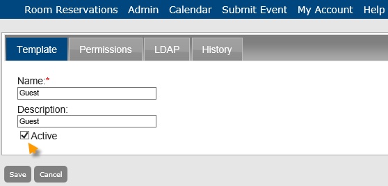

Tip:If your organization has purchased and installed the optional EMS Integrated Authentication module, you can selectLDAP groups for assignment to a template and you can associate these selected LDAP groups with a User Template.
A user template contains a set of calendar permissions. For example, Template A specifies requestor access to Calendar A and view-only access to Calendar B, Template B specifies view-only access to all calendars in Master Calendar, and so on. Templates are always optional. You can apply a template to a group of user records in a single step to simplify the setup and maintenance of Master Calendar.
This topic guides you in creating a new user template and working with existing ones.
| Tip:If your organization has purchased and installed the optional EMS Integrated Authentication module, you can selectLDAP groups for assignment to a template and you can associate these selected LDAP groups with a User Template. |
1. On the Admin menu, point to Security > User Templates.
The User Templates page opens on the Active tab, which lists all currently active user templates in Master Calendar.

2. Under Actions, click Add. The Template tab opens, where you can name and describe the template.

3. Click Save or proceed to the subsequent sections of this topic.
1. To work with existing templates, from the User Templates page, click the Active or Inactive tab.
2. Select the template you wish to work with.
3. Click Edit.
| Tips: Use the Print option on the page above to generate a report of templates in Master Calendar. On the Inactive tab, you can delete templates. You can only delete inactive templates. |
The User template opens in edit mode.

You can change the name and description for the User Template on this page
| Tips: You can use the Active checkbox to control whether the template is active or inactive. The History tab provides a history of this User Template. |
| Tab | Information to Edit |
|---|---|
Template |
|
Permissions | The type of access that a user with the selected template will have to the calendars in Master Calendar. See "To specify user template permissions". |
LDAP | The security group information that is maintained on your organization’s network in conjunction with the templates in Master Calendar. See "To add LDAP groups to a user template". |
3. Proceed to the subtopics in this section.
Permissions control the type of access users assigned to the template have to a calendar.
1. From Step 1 above, click the Permissions tab.
The Viewer, Requester, and Calendar fields indicate the type of access that a user with the selected template will have to the calendars in Master Calendar. Users assigned to the selected template can still view any calendar that remains in the Available Calendars column, unless the calendar is defined as a private.
Calendar Access Type Fields
| Field | Description |
|---|---|
| Viewer | Users can only view events on the calendar. |
| Requester | Users can view events on the calendar and submit events to the calendar; however, the submitted event is posted only if approved by the Calendar Manager. |
| Calendar User | Users can view events on the calendar and submit events to the calendar and the events are automatically posted without approval by the Calendar Manager. Calendar Manager is not an option when you are defining templates. It is available only when you are adding or editing a user record. |
1. From Step 1 above, click the Active or Inactive tab and select the templates you wish to work with. Under Actions, click Assign Users.

The page for assigning users to a template opens.
2. Enter the search criteria and then click Go to search for the users that you want to assign to a selected template.
3. Move the User from Available to Assigned.
4. Click Save to save the template as an active template in Master Calendar.
Before you can assign LDAP "Security Groups" to a template, you must select the LDAP groups that you want to assign.
 | Note: The Assign LDAP Groups option is available only if your organization has purchased and installed the optional Integrated Authentication module. This module allows your organization to use the security group information that is maintained on its own network in conjunction with the templates in Master Calendar to set permissions for its Master Calendar users. |
1. From Step 1 above, click the Active or Inactive tab and select the templates you wish to work with. Under Actions, click Assign to LDAP Groups.
The Security Groups page opens, listing LDAP security groups you can assign to the template.
2. To select a security group, select it from the list and click Add. The Security Group Lookup dialog box opens. You use this dialog box to search for the security groups that you want to assign to a template.

3. Specify the search criteria for the security groups that you want to assign to a template and then click Go.
4. From the search results, select the security group that is to be assigned to a template (CTRL-click to select multiple groups), and then click Add to move the groups to the Security Groups page.
5. When you add a security group to the security groups page, they are added in alphabetical order and this becomes the default priority for the groups. You can leave them as is or change the priority order of the groups in this list by using the Move Up ++ and Move Down -- buttons.
 | Concept:If a user exists in multiple LDAP security groups, then the user’s security settings are assigned based on the LDAP group with the highest priority. For example, if User A is assigned to both the Billing LDAP group and the Cert Publishers LDAP group, and the Billing group has a higher priority (that is, it is higher up in the list) than the Cert Publishers group, then User A’s access security settings are granted based on the Master Calendar template to which the Cert Publishers group is assigned. |
1. From Step 1 above, click the LDAP tab.
2. From the Security Groups list, select the security group that is to be assigned to the template that you just added (CTRL-click to select multiple groups), and then click then click the Add button to move the selected groups to the Selected Security Groups list.
3. Click Save to assign the selected LDAP security groups to the template.